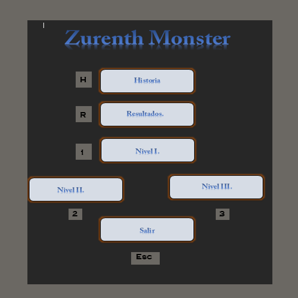
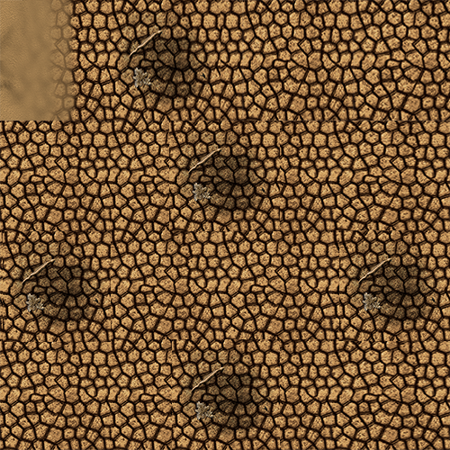
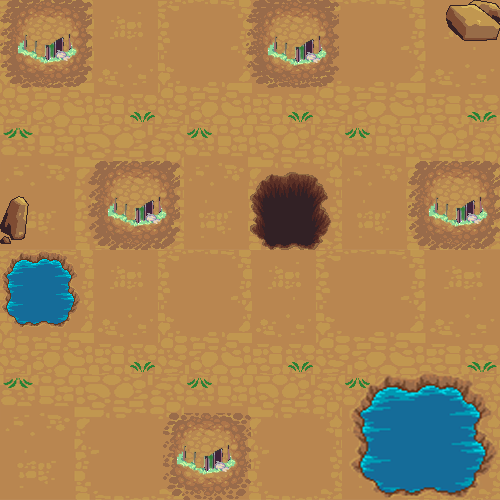
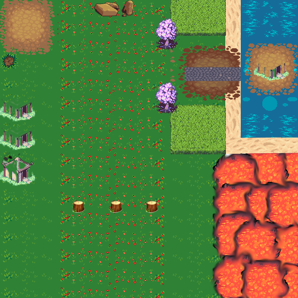

Acerca de
Estudiante de Ingenieria en Sistemas computacionales en Unitec

Zureth Moster by Rudy Alexander Cardona is licensed under a Creative Commons Reconocimiento 4.0 Internacional License.
Creado a partir de la obra en https://www.facebook.com/xanleard.
Zurenth Monster.
Este es Un Clasico Juegos de RPG, Donde el Heroe tendra que salvar a las Aldeas de la destuccion de los Dragones y centinelas que acechan a los alrededores.
La Historia cuenta :
Que los aldeanos vivian en paz y tranquilidad hasta que un inquieto caballero con sus anehlos de Ser el mas fuerte emprendio un viaje hacia tierras lejanas en su travesia se topo con un isla que misteriosamente nadie avia visto desidio desenvarcar para averiguar que se encontrava ahi, al pasar de las horas soplava el viento muy fuerte, sin darse cuenta se topo con un tenible dragon que hasta estos dias nadie sabia que existian, el Caballero enprendio una ardua batalla, pero perdio ante las tenibles bestias, los dragones siguieron el rastro del caballero hasta llegar al continente de donde era el caballero, las tenibles Bestias con sed de venganza empezaron a destruir todas las aldeas. El hermano del caballero que era un Mago Prodigioso al darse cuenta de esta terrible amensa,Se propuso una ardua tarea que era de destruir y matar a todas esta tenibles bestias y Salvar a Todas las demas aldeas De la Destruccion.
Imagenes del juego :
   